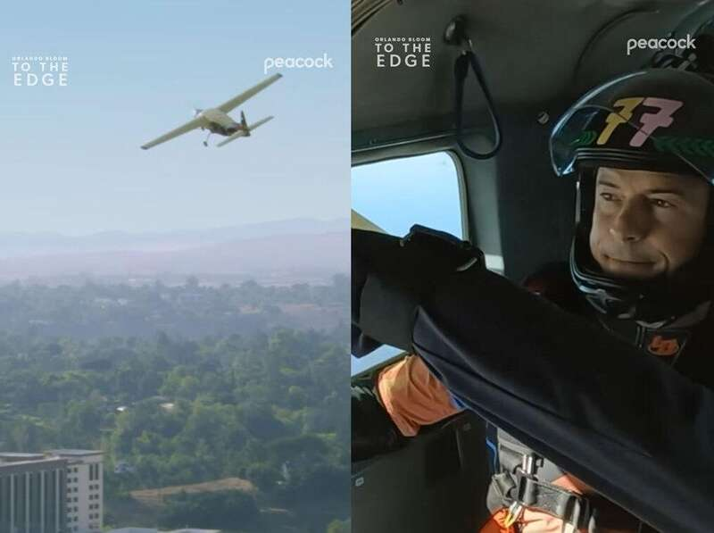

当地时间8月8日，劳伦·桑切斯在社交媒体上发布了一段视频，展示了她驾驶飞机的英姿。
现年54岁的桑切斯因为和亚马逊创始人杰夫·贝索斯恋爱而知名，虽说在一起已经快5年了，而且还订婚了，但以破坏各自家庭为代价的恋情并不值得称赞，这也是桑切斯和贝索斯一直存在争议的原因。
但似乎是越不被喜欢，就越要极力证明自己，和贝索斯在一起后，桑切斯迅速地挤进了“名媛圈”中，而曾经的“科技宅男”现在也比以前活跃了很多，就连时尚活动也不愿错过。
一直以来，桑切斯都以自己会开飞机为骄傲，她也很愿意展示自己开着飞机翱翔在天空的样子。
这一次桑切斯不只是要驾驶直升飞机，而且还承担了点儿任务，她载着的是四位准备参加跳伞运动的乘客，其中有她和前男友的儿子尼克·冈萨雷斯、“精灵王子”奥兰多·布鲁姆、职业跳伞运动员卢克·艾金斯以及其妻子莫妮卡·李。
从桑切斯分享的视频看，她对承担这样的任务还真是挺开心的，并且配文说：“我想你可以叫我直升机妈妈。”
画面很快就转到四个人陆续从飞机舱门处跳下的画面。23岁的冈萨雷斯与47岁的布鲁姆，也都是自己跳下去的，可见他们之前已经经过专业训练了。

布鲁姆此前曾在社交媒体上多次分享自己跳伞的短视频，几乎退出荧幕的他倒也活得潇洒，玩成了主业，当然时不时地也要和未婚妻“水果姐”凯蒂·佩里同框秀一下恩爱。
布鲁姆称自己喜欢和叔叔一起跳伞，而他的跳伞教练正是卢克·艾金斯。而对于这一次由桑切斯主导的跳伞活动，“精灵王子”倒也没有想要展示出来。
事实上，去年的时候布鲁姆和桑切斯就有交集了。他们带着各自的伴侣，在克罗地亚城市杜布罗夫尼克闲逛，当然身后是跟着保镖的。
有消息称，布鲁姆和佩里都是受到桑切斯的邀请，到贝索斯所拥有的那艘价值5亿美元的游艇上度假。而那艘游艇已经接待过很多名人了，显然这就是亿万富翁扩大圈子的方式，当然也是他宠未婚妻的表现，知道桑切斯喜欢社交。
不得不说，尽管桑切斯早已经年过半百了，但她所表现出的那种精力充沛的状态，给人的感觉就像是20多岁似的，估计很多被工作压力弄得喘不过来气的年轻人，都不会有她的那种活力，果然有闲有钱的生活是可以“逆龄”的，反之疲惫不堪的生活会加速衰老。
不知道幸运的桑切斯，未来会有怎样的发展，但估计她现在最大的愿望，就是能跟贝索斯尽快结婚，趁早当上“贝索斯太太”。这个倒也不全是猜测，去年夏天，在变成贝索斯的未婚妻之后，桑切斯就毫不掩饰地向外界透露称，自己迫不及待地想要再次走进婚姻，而且婚后肯定是要随夫姓的。